Confronting the cosmic dipole tension
Oliver Oayda
PhD Candidate
Sydney Institute for Astronomy
The University of Sydney
November 20, 2026
The cosmological principle may be under the pump…
The Kinematic Dipole
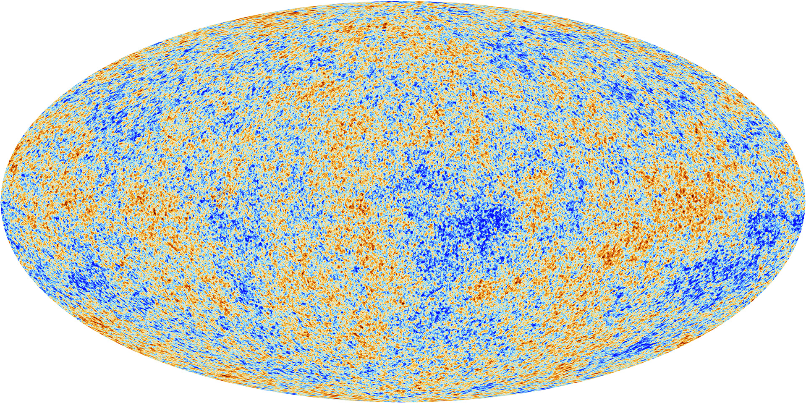
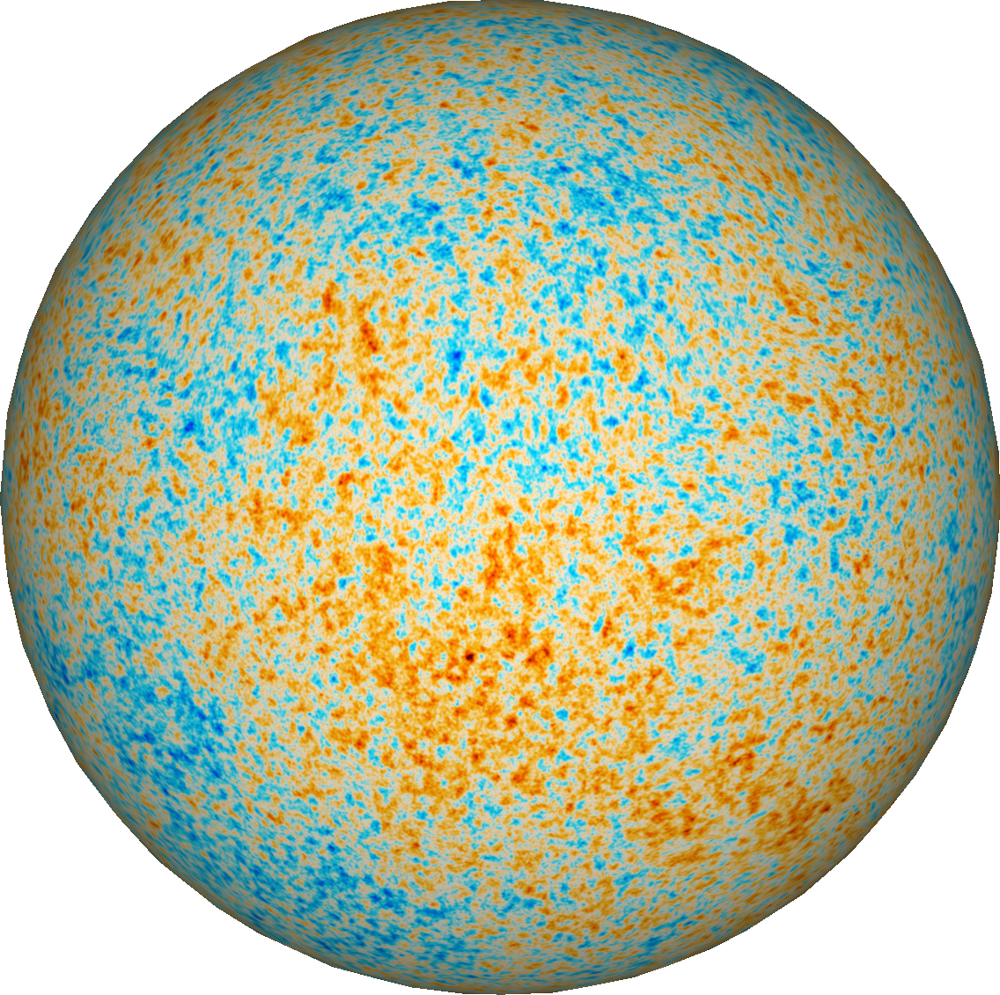
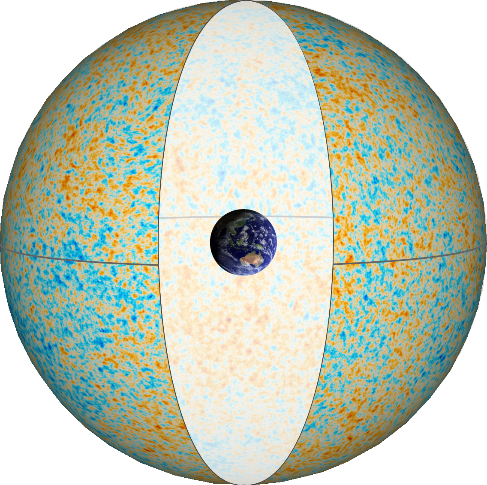
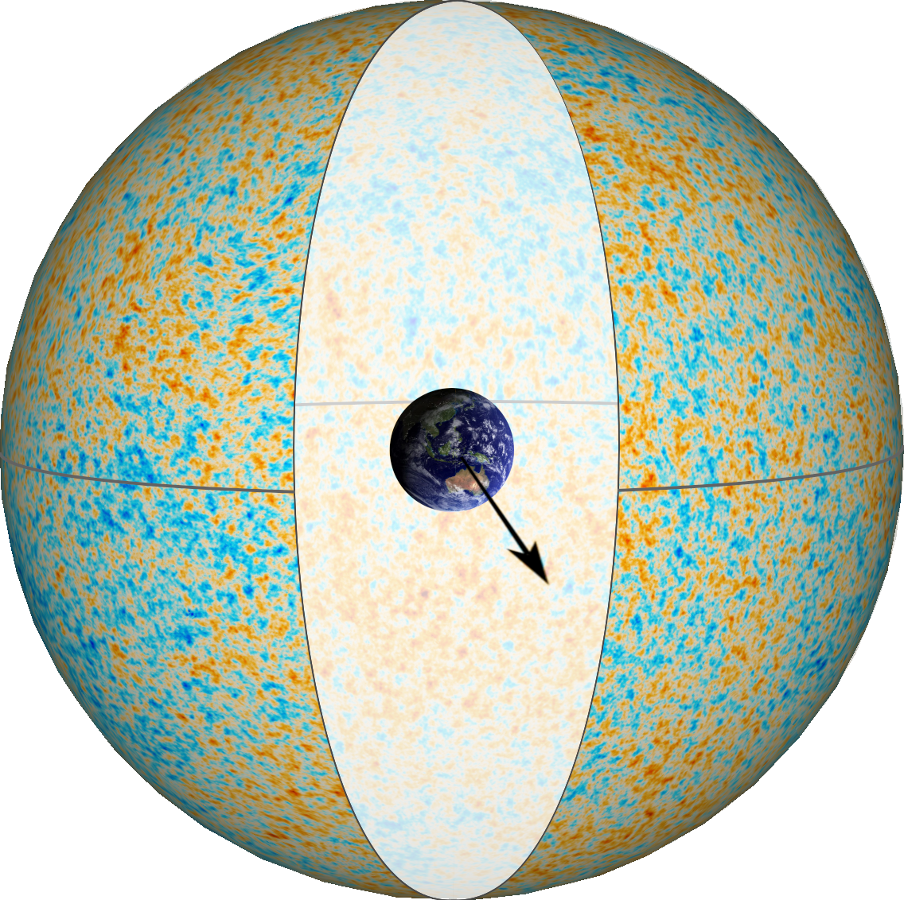
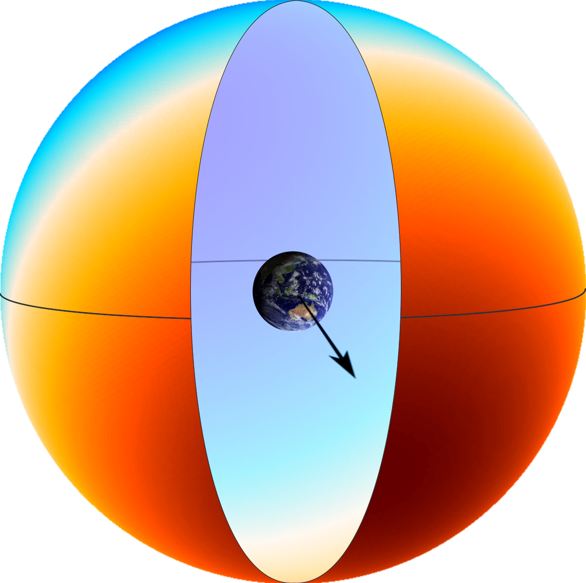
The Kinematic (Thermal) Dipole
\[\begin{align} \require{color} \definecolor{secondarycolor}{RGB}{235,129,27} \newcommand{\alertmath}[1]{{\color{secondarycolor}{#1}}} T(\theta ) &= T_{0} \frac{\sqrt{1 - \alertmath{\beta} ^2 }}{1 - \alertmath{\beta} \cos \theta } \\ &\approx T_0 (1 + \alertmath{\beta} \cos \theta). \end{align}\]
There should be a similar effect for other observables, like galaxies!
Special Relativity
aberration_create = (options = {}) => {
const root = html`<div class="aberration-visual">
<canvas data-id="aberration-canvas" width="1000" height="780" role="img" aria-label="Source directions on the sky, aberrated toward the black velocity marker as speed increases"></canvas>
<label data-id="aberration-control" class="doppler-beta-control">
<span>Speed (c)</span>
<input class="aberration-beta-slider" type="range" min="0" max="0.999" step="0.001" value="0" aria-label="Aberration speed in units of c">
<output></output>
</label>
</div>`;
const canvas = root.querySelector("canvas");
const ctx = canvas.getContext("2d");
// Draw at twice the CSS resolution for sharp projected points.
ctx.scale(2, 2);
const input = root.querySelector("input");
const output = root.querySelector("output");
const radius = 180, cx = 250, cy = 192;
// The boost points toward the upper-left marker in this orthographic view.
const axis = [-0.5, 0.6, Math.sqrt(0.39)];
const viewLatitude = 30 * Math.PI / 180;
// Camera above the equator: screen north is the projected north pole.
function project([x, y, z]) {
return [x, y * Math.cos(viewLatitude) - z * Math.sin(viewLatitude),
y * Math.sin(viewLatitude) + z * Math.cos(viewLatitude)];
}
function gridSegment(a, b) {
ctx.globalAlpha = 1 - healpixOpacity;
ctx.strokeStyle = (a[2] + b[2]) / 2 >= 0
? "rgba(51, 71, 75, 0.10)" : "rgba(51, 71, 75, 0.035)";
ctx.beginPath();
ctx.moveTo(cx + radius * a[0], cy - radius * a[1]);
ctx.lineTo(cx + radius * b[0], cy - radius * b[1]);
ctx.stroke();
ctx.globalAlpha = 1;
}
const rng = d3.randomLcg(73);
// Sample once, uniformly in solid angle. Never transform the previous frame.
const sources = Array.from({ length: 1800 }, () => {
const z = 2 * rng() - 1;
const phi = 2 * Math.PI * rng();
const r = Math.sqrt(1 - z * z);
const direction = [r * Math.cos(phi), r * Math.sin(phi), z];
const mu = direction.reduce((sum, v, i) => sum + v * axis[i], 0);
// Normalize gamma(1 + beta*mu) between its theoretical extrema.
// Gamma and beta cancel, leaving (1 + mu)/2; neutral is relative,
// not the physical zero-redshift frequency.
const t = Math.max(0, Math.min(1, (1 + mu) / 2));
return { direction, mu, colour: d3.interpolateRgb("#9eb4d3", d3.interpolateRdBu(t)) };
});
let colourMix = 0;
let colourFrame;
let healpixOpacity = 0;
let densityOpacity = 0;
let densityDomain = null;
let densityRaster = null;
let densityImage = null;
let densityCellIds = null;
const healpixPixels = options.healpixNside
? window.HEALPixBoundaries.boundaries(options.healpixNside) : [];
// HEALPix uses z as north; the drawing uses y as north. Convert once.
const healpixProjected = healpixPixels.map(pixel => pixel.map(([x, y, z]) => project([x, z, -y])));
function aberrate(n, mu, beta) {
const denominator = 1 + beta * mu;
const muPrime = (mu + beta) / denominator;
const transverse = Math.sqrt(1 - beta * beta);
return n.map((v, i) => muPrime * axis[i] + transverse * (v - mu * axis[i]) / denominator);
}
function occupancy(beta) {
const counts = new Uint32Array(healpixPixels.length);
for (const {direction, mu} of sources) {
const [x, y, z] = aberrate(direction, mu, beta);
// Invert the HEALPix-to-drawing coordinate conversion, before projection.
counts[HEALPixBoundaries.vectorPixel(options.healpixNside, [x, -z, y])]++;
}
return counts;
}
function freezeDensityScale() {
const counts = occupancy(input.valueAsNumber);
densityDomain = [Math.min(...counts), Math.max(...counts)];
root.dataset.densityDomain = JSON.stringify(densityDomain);
root.dataset.densityReferenceBeta = input.value;
}
function prepareDensityRaster() {
if (densityRaster) return;
densityRaster = document.createElement("canvas");
densityRaster.width = densityRaster.height = 720;
densityImage = densityRaster.getContext("2d").createImageData(720, 720);
densityCellIds = new Int32Array(720 * 720).fill(-1);
// Cache an inverse orthographic projection of the front hemisphere.
// Cell assignment at each screen pixel handles curved boundaries and limb
// clipping exactly, without joining partially hidden cells with chords.
for (let row = 0; row < 720; row++) for (let col = 0; col < 720; col++) {
const x = (col + 0.5 - 360) / 360, y = (360 - row - 0.5) / 360;
const r2 = x * x + y * y;
if (r2 > 1) continue;
const z = Math.sqrt(1 - r2);
const worldY = y * Math.cos(viewLatitude) + z * Math.sin(viewLatitude);
const worldZ = -y * Math.sin(viewLatitude) + z * Math.cos(viewLatitude);
densityCellIds[row * 720 + col] = HEALPixBoundaries.vectorPixel(options.healpixNside, [x, -worldZ, worldY]);
}
}
function drawDensity(beta) {
prepareDensityRaster();
const counts = occupancy(beta);
const [min, max] = densityDomain;
const colours = Array.from(counts, count => d3.rgb(d3.interpolateViridis(
Math.max(0, Math.min(1, (count - min) / (max - min || 1)))
)));
for (let i = 0; i < densityCellIds.length; i++) {
const id = densityCellIds[i];
if (id < 0) continue;
const colour = colours[id], j = i * 4;
densityImage.data[j] = colour.r;
densityImage.data[j + 1] = colour.g;
densityImage.data[j + 2] = colour.b;
densityImage.data[j + 3] = 255;
}
densityRaster.getContext("2d").putImageData(densityImage, 0, 0);
ctx.globalAlpha = densityOpacity;
ctx.drawImage(densityRaster, cx - radius, cy - radius, radius * 2, radius * 2);
const legend = ctx.createLinearGradient(0, 272, 0, 92);
for (let i = 0; i <= 20; i++) legend.addColorStop(i / 20, d3.interpolateViridis(i / 20));
ctx.fillStyle = legend;
ctx.fillRect(450, 92, 12, 180);
ctx.fillStyle = "#33474b";
ctx.font = "11px Fira Sans, sans-serif";
ctx.textAlign = "left";
ctx.fillText(String(max), 467, 100);
ctx.fillText(String(min), 467, 272);
ctx.font = "9px Fira Sans, sans-serif";
ctx.textAlign = "center";
ctx.fillText("Sources / pixel", 459, 80);
ctx.globalAlpha = 1;
root.dataset.densityCountTotal = String(counts.reduce((sum, n) => sum + n, 0));
}
function draw() {
const beta = input.valueAsNumber;
root.value = beta;
root.dataset.colourMix = colourMix.toFixed(3);
if (!options.static && window.Reveal.getCurrentSlide() === root.closest("section")) {
aberration_state.beta = beta;
// The detail slide's split only changes the colours on that slide.
if (!options.neutralColourTrigger) aberration_state.colourMix = colourMix;
}
output.value = beta.toFixed(3);
ctx.clearRect(0, 0, 500, 390);
root.dataset.densityOpacity = densityOpacity.toFixed(3);
ctx.globalAlpha = 1 - densityOpacity;
// A quiet silhouette gives the transparent point cloud a spherical edge.
const silhouette = ctx.createRadialGradient(cx, cy, 0, cx, cy, radius);
silhouette.addColorStop(0, "rgba(51, 71, 75, 0.012)");
silhouette.addColorStop(0.94, "rgba(51, 71, 75, 0.025)");
silhouette.addColorStop(0.985, "rgba(51, 71, 75, 0.05)");
silhouette.addColorStop(1, "rgba(51, 71, 75, 0)");
ctx.fillStyle = silhouette;
ctx.beginPath();
ctx.arc(cx, cy, radius, 0, 2 * Math.PI);
ctx.fill();
ctx.globalAlpha = 1;
if (densityOpacity > 0) drawDensity(beta);
// Sparse meridians on the reference sphere, with north up on the page.
// These show viewing geometry; they do not move with the source population.
const pole = [0, 1, 0];
const east = [1, 0, 0];
const depthAxis = [0, 0, 1];
ctx.lineWidth = 0.65;
for (let meridian = 0; meridian < 6; meridian++) {
const phi = meridian * Math.PI / 3;
let previous = null;
for (let j = 0; j <= 120; j++) {
const theta = j * Math.PI / 120;
const point = project(pole.map((v, i) => Math.cos(theta) * v +
Math.sin(theta) * (Math.cos(phi) * east[i] + Math.sin(phi) * depthAxis[i])));
if (previous) gridSegment(previous, point);
previous = point;
}
}
// Sample full latitude circles so the raised camera reveals their curvature.
for (const latitude of [-60, -30, 0, 30, 60]) {
const angle = latitude * Math.PI / 180;
let previous = null;
for (let j = 0; j <= 180; j++) {
const phi = j * 2 * Math.PI / 180;
const point = project([Math.cos(angle) * Math.cos(phi),
Math.sin(angle), Math.cos(angle) * Math.sin(phi)]);
if (previous) gridSegment(previous, point);
previous = point;
}
}
// Fixed observed-sky pixels: sources move between cells as beta changes.
// Subdued back-side lines retain the transparent-sphere appearance.
if (healpixOpacity > 0) {
root.dataset.healpixOpacity = healpixOpacity.toFixed(3);
ctx.lineWidth = 0.8;
for (const pixel of healpixProjected) {
for (let i = 1; i < pixel.length; i++) {
const a = pixel[i - 1], b = pixel[i];
ctx.strokeStyle = (a[2] + b[2]) / 2 >= 0
? `rgba(51, 71, 75, ${0.5 * healpixOpacity * (1 - densityOpacity)})`
: `rgba(51, 71, 75, ${0.09 * healpixOpacity * (1 - densityOpacity)})`;
ctx.beginPath();
ctx.moveTo(cx + radius * a[0], cy - radius * a[1]);
ctx.lineTo(cx + radius * b[0], cy - radius * b[1]);
ctx.stroke();
}
}
} else root.dataset.healpixOpacity = "0.000";
ctx.fillStyle = "#9eb4d3";
for (const { direction: n, mu, colour } of sources) {
ctx.fillStyle = colour(beta === 0 ? 0 : colourMix);
const observed = project(aberrate(n, mu, beta));
// Project both hemispheres, matching the original transparent sphere.
// Positive z faces the viewer. Use observer-frame depth so the cue
// follows each source as aberration moves it around the sphere.
const depth = Math.max(0, Math.min(1, (observed[2] + 1) / 2));
ctx.globalAlpha = (0.2 + 0.8 * depth) * (1 - densityOpacity);
const pointRadius = 1.5 + 1.6 * depth;
ctx.beginPath();
ctx.arc(cx + radius * observed[0], cy - radius * observed[1], pointRadius, 0, 2 * Math.PI);
ctx.fill();
}
ctx.globalAlpha = 1;
if (options.showMarker !== false) {
const marker = project(axis);
const sx = cx + radius * marker[0], sy = cy - radius * marker[1];
ctx.fillStyle = "#000";
ctx.beginPath();
for (let i = 0; i < 10; i++) {
const angle = -Math.PI / 2 + i * Math.PI / 5;
const r = i % 2 ? 7 : 17;
const x = sx + r * Math.cos(angle), y = sy + r * Math.sin(angle);
if (i === 0) ctx.moveTo(x, y); else ctx.lineTo(x, y);
}
ctx.closePath();
ctx.fill();
}
}
if (options.static) {
input.value = String(options.beta ?? 0.3);
colourMix = options.colourMix ?? 0;
draw();
root.querySelector("label").removeAttribute("data-id");
input.addEventListener("input", draw);
if (options.healpixTrigger) {
let overlayFrame;
function overlayVisible() {
return root.closest("section")?.querySelector(options.healpixTrigger)?.classList.contains("visible");
}
function overlayChange(event) {
const section = root.closest("section");
const densityStep = options.densityTrigger ? section?.querySelector(options.densityTrigger) : null;
if (event.fragment !== section?.querySelector(options.healpixTrigger) && event.fragment !== densityStep) return;
cancelAnimationFrame(overlayFrame);
const densityTo = densityStep?.classList.contains("visible") ? 1 : 0;
if (event.fragment === densityStep && densityTo) freezeDensityScale();
const densityFrom = densityOpacity;
const from = healpixOpacity, to = overlayVisible() ? 1 : 0;
const started = performance.now();
function tick(now) {
const t = Math.min(1, (now - started) / 600);
const eased = t * t * (3 - 2 * t);
healpixOpacity = from + (to - from) * eased;
densityOpacity = densityFrom + (densityTo - densityFrom) * eased;
draw();
if (t < 1) overlayFrame = requestAnimationFrame(tick);
}
overlayFrame = requestAnimationFrame(tick);
}
function overlaySync() {
cancelAnimationFrame(overlayFrame);
healpixOpacity = overlayVisible() ? 1 : 0;
densityOpacity = options.densityTrigger && root.closest("section")?.querySelector(options.densityTrigger)?.classList.contains("visible") ? 1 : 0;
if (densityOpacity && !densityDomain) freezeDensityScale();
draw();
}
Reveal.on("fragmentshown", overlayChange);
Reveal.on("fragmenthidden", overlayChange);
Reveal.on("slidechanged", overlaySync);
invalidation.then(() => {
cancelAnimationFrame(overlayFrame);
Reveal.off("fragmentshown", overlayChange);
Reveal.off("fragmenthidden", overlayChange);
Reveal.off("slidechanged", overlaySync);
});
overlaySync();
}
canvas.removeAttribute("data-id");
canvas.setAttribute("aria-label", "Source directions on a sphere, with aberration at beta = " + input.value);
return root;
}
input.addEventListener("input", () => {
draw();
root.dispatchEvent(new Event("input", { bubbles: true }));
});
const colourSelector = '[data-aberration-color="true"]';
const colourStep = () => root.closest("section")?.querySelector(colourSelector);
const neutralStep = () => options.neutralColourTrigger
? root.closest("section")?.querySelector(options.neutralColourTrigger)
: null;
function transitionColour(target, delay = 0) {
cancelAnimationFrame(colourFrame);
const from = colourMix;
const start = performance.now() + delay;
function tick(now) {
const progress = Math.max(0, Math.min(1, (now - start) / 600));
const eased = progress * progress * (3 - 2 * progress);
colourMix = from + (target - from) * eased;
draw();
if (progress < 1) colourFrame = requestAnimationFrame(tick);
}
colourFrame = requestAnimationFrame(tick);
}
function shown(event) {
if (event.fragment === colourStep()) {
// Let the preset slider finish resetting to 0.5c before colouring.
const steps = event.fragment.closest(".fragment-slider-steps");
transitionColour(1, Number(steps.dataset.sliderDuration) || 600);
} else if (event.fragment === neutralStep()) {
transitionColour(0, Number(event.fragment.dataset.splitDuration) || 0);
}
}
function hidden(event) {
if (event.fragment === colourStep()) transitionColour(0);
else if (event.fragment === neutralStep()) transitionColour(aberration_state.colourMix);
}
function syncColour() {
cancelAnimationFrame(colourFrame);
if (!options.static && window.Reveal.getCurrentSlide() === root.closest("section")) {
input.value = String(aberration_state.beta);
colourMix = neutralStep()?.classList.contains("visible") ? 0 : aberration_state.colourMix;
draw();
root.dispatchEvent(new Event("input", { bubbles: true }));
}
}
window.Reveal.on("fragmentshown", shown);
window.Reveal.on("fragmenthidden", hidden);
window.Reveal.on("slidechanged", syncColour);
invalidation.then(() => {
cancelAnimationFrame(colourFrame);
window.Reveal.off("fragmentshown", shown);
window.Reveal.off("fragmenthidden", hidden);
window.Reveal.off("slidechanged", syncColour);
});
input.value = String(aberration_state.beta);
colourMix = aberration_state.colourMix;
draw();
return root;
}
Special Relativity
\(\log S_\nu\)
\(\log \nu\)
\(S_\nu \propto \nu^{-\alpha}\)
// Fixed simulation inputs. Keeping these together makes the assumed physics
// and the plotted population straightforward to audit.
doppler_config = ({
nSources: 60000,
randomSeed: 73,
differentialCountIndex: 2.5, // dN/dS_nu proportional to S_nu^(-2.5)
minFlux: 1,
maxFlux: 100,
plotMaxFlux: 200,
nBins: 52,
spectralIndex: 1,
cosTheta: 1, // small patch in the forward hemisphere
fluxCut: 5
})// Inverse-CDF samples from the truncated differential power law
// p(S_nu) proportional to S_nu^(-p), for S_min <= S_nu <= S_max.
doppler_rest_fluxes = {
const p = doppler_config.differentialCountIndex;
const exponent = 1 - p;
const low = Math.pow(doppler_config.minFlux, exponent);
const high = Math.pow(doppler_config.maxFlux, exponent);
const rng = d3.randomLcg(doppler_config.randomSeed);
return Array.from({ length: doppler_config.nSources }, () =>
Math.pow(low + rng() * (high - low), 1 / exponent)
);
}// Observer-frame transformation requested for the forward patch:
// gamma = 1 / sqrt(1 - beta^2)
// delta = gamma (1 + beta cos(theta))
// S'_nu = S_nu delta^(1 + alpha)
doppler_transform = {
const beta = doppler_beta;
const gamma = 1 / Math.sqrt(1 - beta * beta);
const delta = gamma * (1 + beta * doppler_config.cosTheta);
const fluxMultiplier = Math.pow(
delta,
1 + doppler_config.spectralIndex
);
return { beta, gamma, delta, fluxMultiplier };
}doppler_histograms = {
function histogram(values, series) {
const counts = Array(doppler_config.nBins).fill(0);
for (const value of values) {
if (
value < doppler_config.minFlux ||
value >= doppler_config.plotMaxFlux
) continue;
const index = Math.min(
doppler_config.nBins - 1,
d3.bisectRight(doppler_bins, value) - 1
);
counts[index] += 1;
}
const bars = counts
.map((count, i) => ({
x0: doppler_bins[i],
x1: doppler_bins[i + 1],
count,
series
}))
.filter((d) => d.count > 0);
// Close the stepped outline at both limits. On the logarithmic y-axis,
// count = 1 is the visible baseline used for an empty boundary bin.
const first = counts.findIndex((count) => count > 0);
const last = counts.findLastIndex((count) => count > 0);
const outline = first < 0
? []
: [
{ x: doppler_bins[first], count: 1, series },
...counts.slice(first, last + 1).map((count, offset) => ({
x: doppler_bins[first + offset],
count: Math.max(1, count),
series
})),
{ x: doppler_bins[last + 1], count: 1, series }
];
return { bars, outline };
}
const observedFluxes = doppler_rest_fluxes.map(
(flux) => flux * doppler_transform.fluxMultiplier
);
const rest = histogram(doppler_rest_fluxes, "Rest frame");
const observed = histogram(observedFluxes, "Observer frame");
return {
bars: [...rest.bars, ...observed.bars],
outlines: [...rest.outline, ...observed.outline]
};
}Plot.plot({
width: 500,
height: 390,
marginLeft: 62,
marginRight: 18,
marginTop: 34,
marginBottom: 54,
style: {
fontFamily: "Fira Sans, Helvetica, sans-serif",
fontSize: "13px"
},
color: {
domain: ["Rest frame", "Observer frame"],
range: ["#50a96d", "#ef7c3b"],
legend: true
},
x: {
type: "log",
domain: [doppler_config.minFlux, doppler_config.plotMaxFlux],
ticks: [1, 10, 100],
label: "Flux density"
},
y: {
type: "log",
domain: [1, 12000],
ticks: [1, 10, 100, 1000, 10000],
label: "Count in each flux bin"
},
marks: [
Plot.rectY(doppler_histograms.bars, {
x1: "x0",
x2: "x1",
y1: 1,
y2: "count",
fill: "series",
fillOpacity: 0.22,
inset: 0
}),
Plot.line(doppler_histograms.outlines, {
x: "x",
y: "count",
z: "series",
stroke: "series",
curve: "step-after",
strokeWidth: 2.8
}),
Plot.ruleX([doppler_config.fluxCut], {
stroke: "#222",
strokeDasharray: "5,4",
strokeOpacity: 0.65
}),
Plot.ruleY([1], {
stroke: "#000",
strokeWidth: 2.8
}),
Plot.ruleX([doppler_config.minFlux], {
stroke: "#000",
strokeWidth: 2.8
}),
Plot.text(
[{ x: doppler_config.fluxCut, label: "Flux cut" }],
{
x: "x",
text: "label",
frameAnchor: "top",
dy: 8,
dx: 5,
textAnchor: "start",
fill: "#222"
}
)
]
})
\(\mathcal{D}=\)
\(\left[\vphantom{x(1+\alpha)}\right.\)
\(2\)
\(+\)
\(x(1+\alpha)\)
\(\left.\vphantom{x(1+\alpha)}\right]\)
\(\beta\)
\(\mathcal{D}=\)
\(+\)
\(2\)\(\beta\)
\(x(1+\alpha)\)\(\beta\)
Typical values: \(\approx\) 0.5%
Counting Galaxies
\[ \require{color} \definecolor{secondarycolor}{RGB}{235,129,27} \newcommand{\alertmath}[1]{{\color{secondarycolor}{#1}}} N_{i} = \overline{N} (1 + \alertmath{\mathcal{D}} \cos \theta_i ) \]
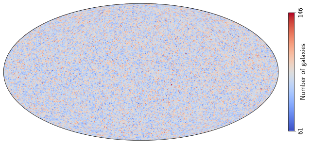
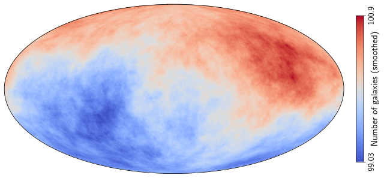
The Ellis-Baldwin Test
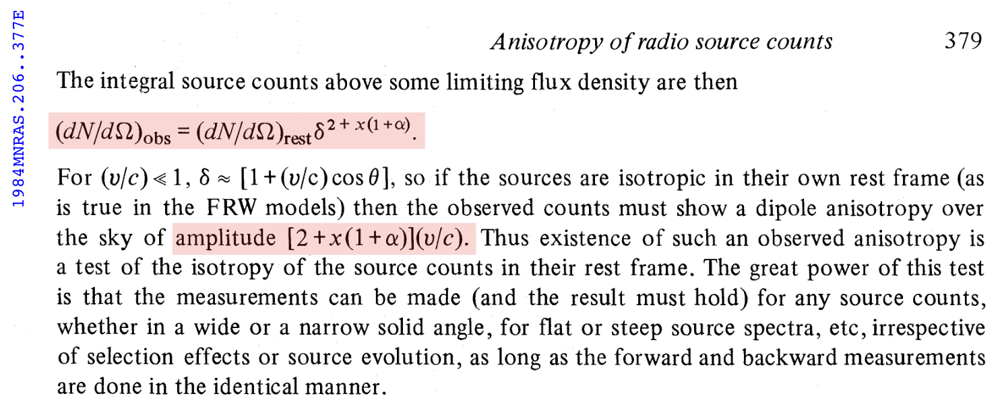
- Any sky coverage.
- Flat or steep spectra.
- Regardless of source evolution & selection effects.
As long as the forward and backward measurements are done identically.
The Cosmological Principle
The Cosmological Principle
DESI DR1 galaxy distribution.
- On very large scales, we assume the Universe is homogeneous and isotropic.
\[ ds^2 = -c^2 dt^2 + a^2(t) d \Sigma^2. \]
- The EB test interrogates this proposition/assumption.
The Amplitude Excess
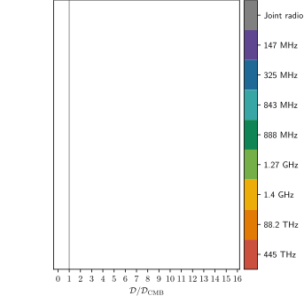
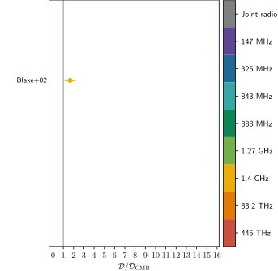
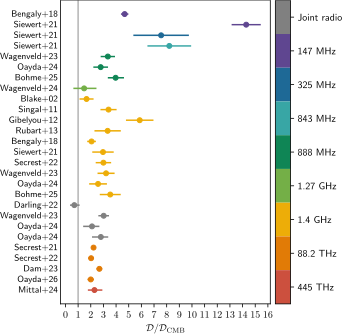
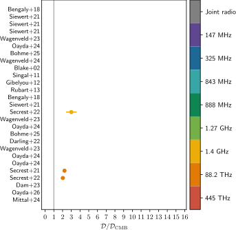
CatWISE Quasars
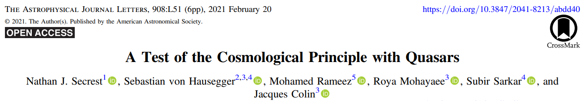
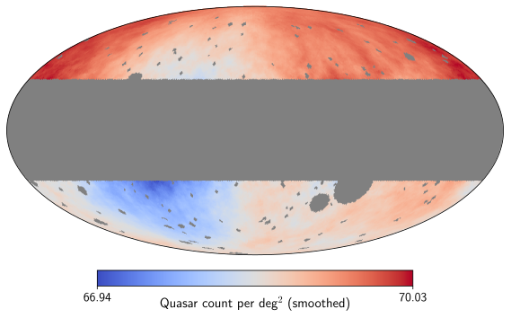
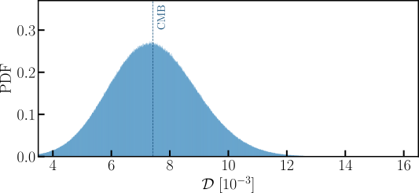
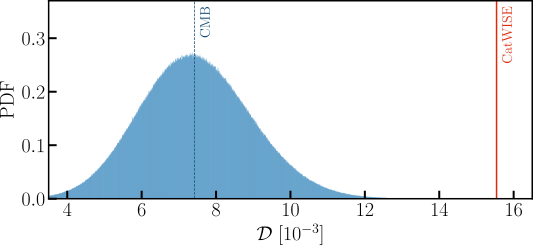
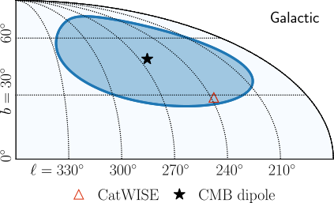
NVSS & CatWISE
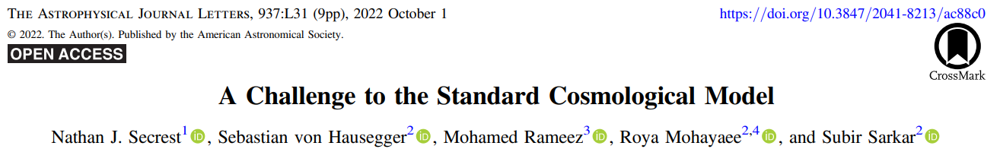
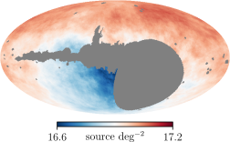
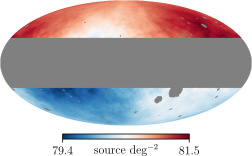
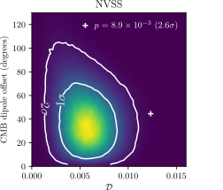
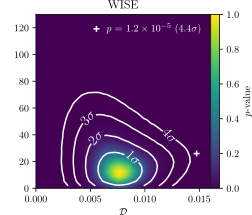
Reject null hypothesis with \(>5\sigma\) significance.
This is a serious problem for modern cosmology…
How to Determine the Dipole
Early studies — frequentist
Later studies — Bayesian
Linear estimator: \[ \boldsymbol{R}_{\textsf{3D}} = \sum_{i} \hat{\boldsymbol{r}}_i \]
Healpy: \[ \chi^2 = \sum_{i} \left[ N_{i} - \left( \overline{N} + \boldsymbol{a} \cdot \hat{\boldsymbol{p}_i} \right) \right]^2 \]
Poisson likelihood (Dam+23): \[\begin{align} \require{HTML} \lambda_i &\mathrel{\class{likelihood-row-one}{=}}\class{likelihood-row-one}{\overline{N} (1 + \boldsymbol{d} \cdot \hat{\boldsymbol{p}}_i)} \\ \class{likelihood-row-two}{\implies P( N_i \mid \boldsymbol{\theta} )} &\mathrel{\class{likelihood-row-two}{=}}\class{likelihood-row-two}{\mathrm{Pois}(N_i \mid \boldsymbol{\theta} )} \\ \class{likelihood-row-three}{\implies \mathcal{L} (\boldsymbol{x} \mid \boldsymbol{\theta})} &\mathrel{\class{likelihood-row-three}{=}}\class{likelihood-row-three}{\prod_{i} \mathrm{Pois}(N_i \mid \boldsymbol{\theta})} \end{align}\]
\(\boldsymbol{\theta} = \{\overline{N}, \mathcal{D}, l^{\circ}, b^{\circ} \}\)
One Thing Left To Do…
\(\textsf{Posterior} = \dfrac{\textsf{Prior} \times \alertmath{\textsf{Likelihood}}}{\textsf{Evidence}}\)
- Use Bayes' theorem to infer dipole parameters (posterior).
- Use evidence to do model comparison.
A Dusty Death?
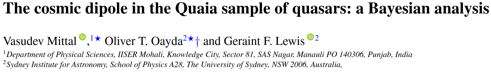
- Quasar candidate sample using Gaia DR3 (Storey-Fisher et al. 2024).
- Colour, magnitude and proper motion cuts to mitigate contamination.
- \(\approx\) 750,000 candidates for \(G < 20.0\).
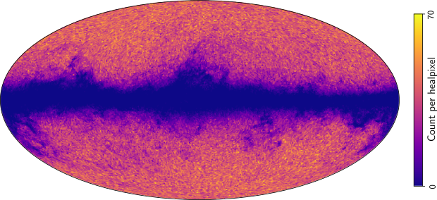
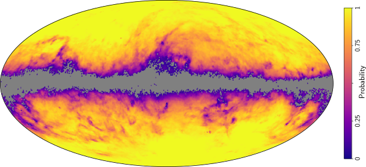
\[ \lambda_{i} = \alertmath{s_{i}} \times \overline{N} (1 + \mathcal{D} \cos \theta ). \]
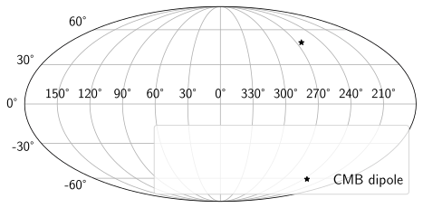
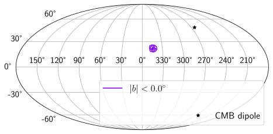
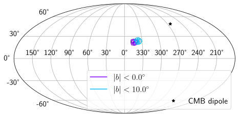
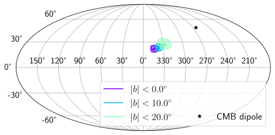
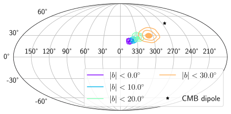

| Amplitude \(\mathcal{D}\) (\(10^{-3}\)) | \(\color{#8000ff}{37^{+4}_{-4}}\) | \(\color{#00b5eb}{34^{+4}_{-4}}\) | \(\color{#66cc8f}{25^{+5}_{-5}}\) | \(\color{#ffb360}{17^{+6}_{-6}}\) | \(\color{#ff0000}{11^{+6}_{-5}}\) | \(5\bigstar\) |
|---|
The Radio Dipole
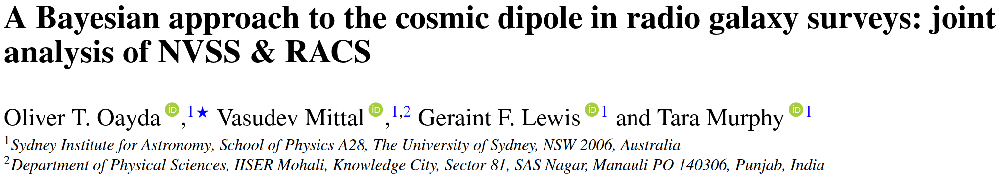
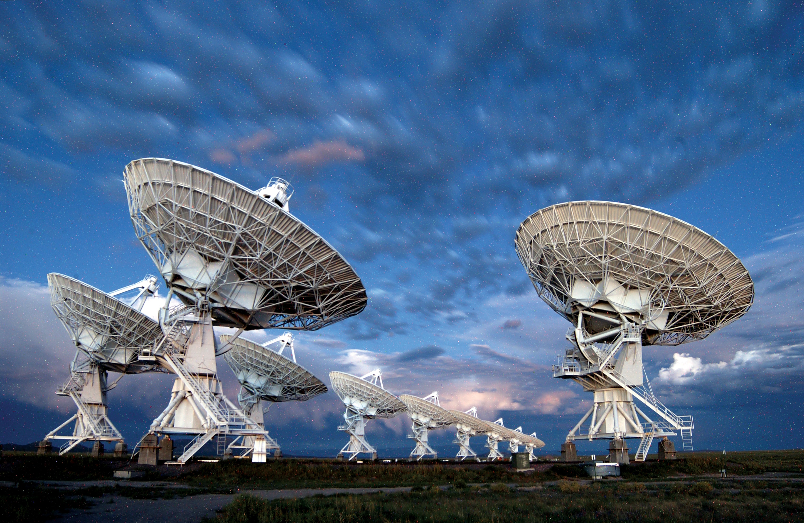
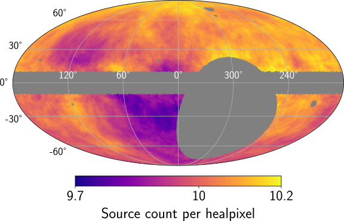
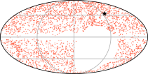
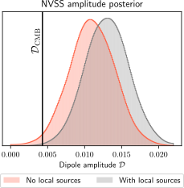
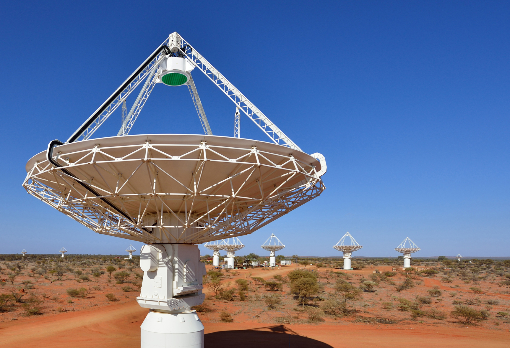
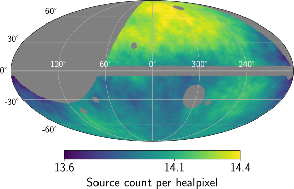
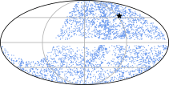
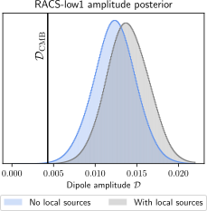
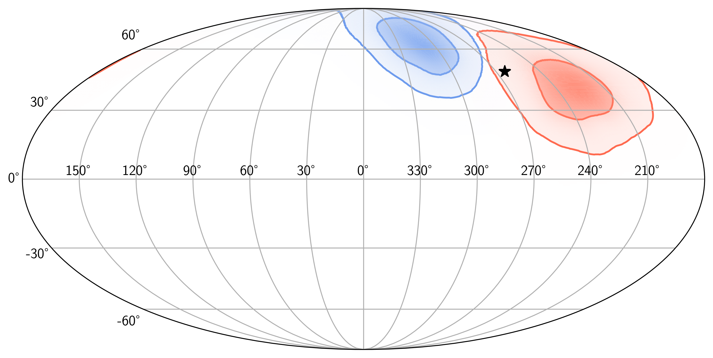
Local Clustering
- We don’t see a perfectly isotropic sky.
- We see noisy realisations from a matter over-density field, \(\delta_m\).
- This may have a large dipole component if the sources are nearby.
- \(C_1\) gets a contribution from \(b(z) n(z)\).
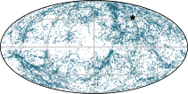
Local Clustering
- More nearby sources means higher clustering power \(C_{1}^{\mathrm{clus.}}\)
\[ \mathcal{D}_{\mathrm{clus.}} = \sqrt{ \frac{9}{4 \pi } C_{1}^{\mathrm{clus.}} } \]
\[ \boldsymbol{d}_{\mathrm{obs.}} = \boldsymbol{d}_{\mathrm{cosmic}} + \boldsymbol{d}_{\mathrm{clus.}} \]
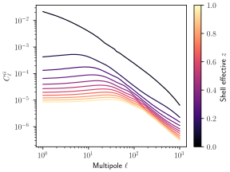
Local Clustering in NVSS & RACS
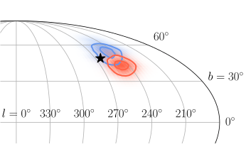
Wising up to CatWISE…
- What is the cause of the ecliptic bias?
- What is the effect of higher order multipoles?
Back to CatWISE
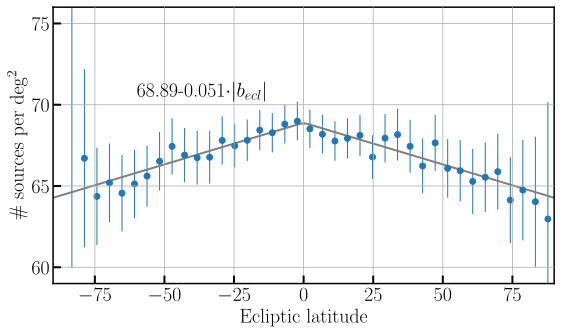
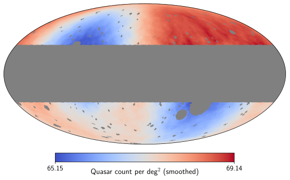
WISE’s Scanning Law
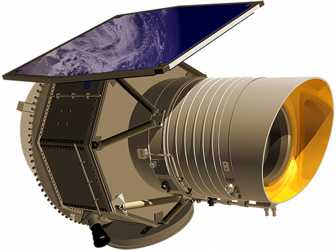
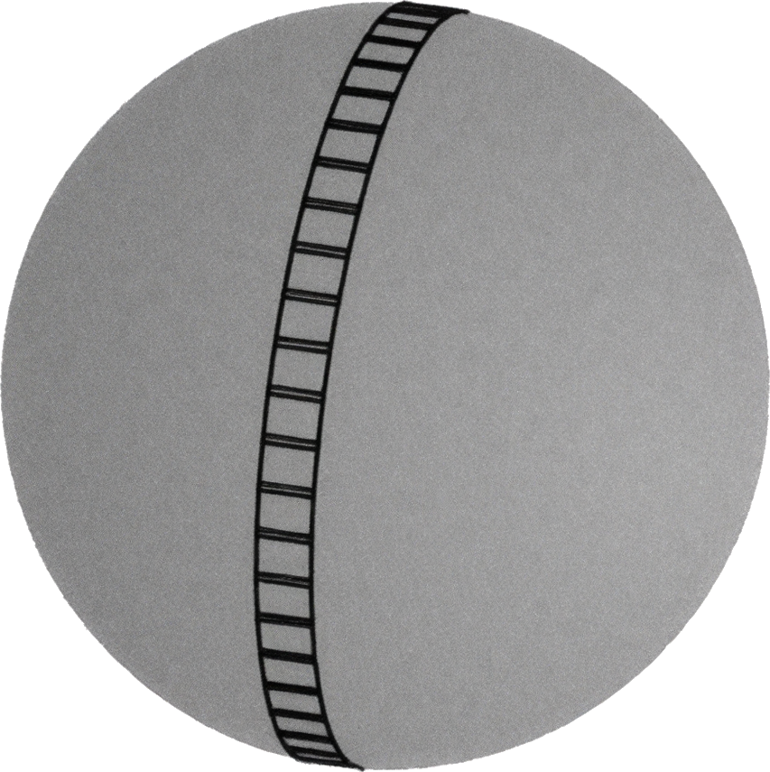
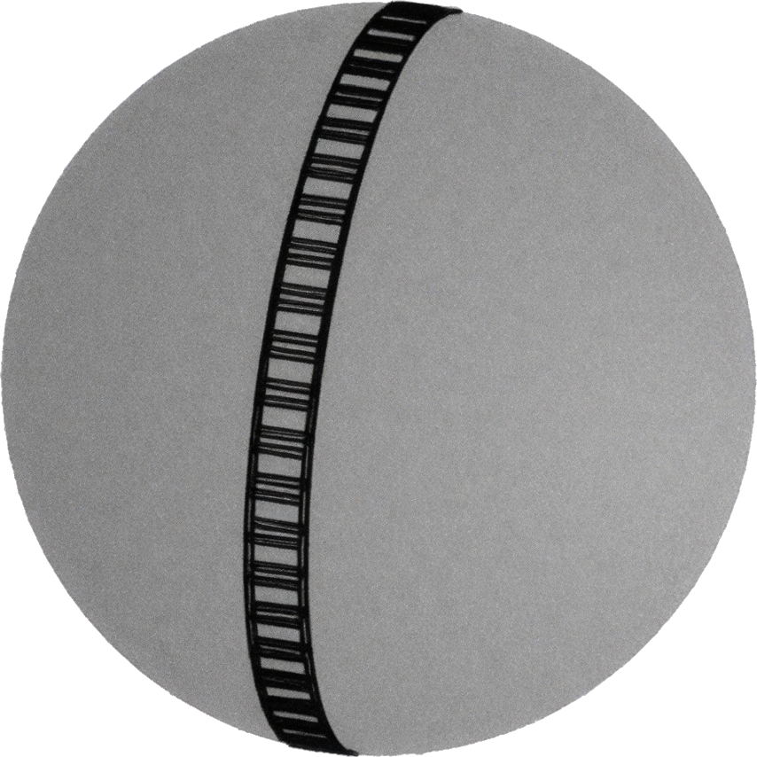
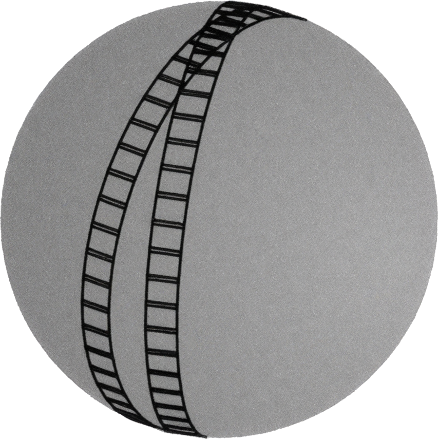
Obeys a scanning law over the survey’s lifetime
Photometric Errors
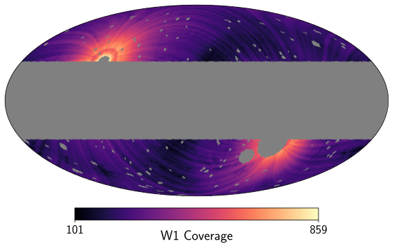
Eddington Bias
\[ \require{color} \definecolor{tomato}{RGB}{255,88,62} \definecolor{cornflowerblue}{RGB}{89,138,234} {\color{tomato}{\textsf{Sampled flux}}} = {\color{cornflowerblue}{\textsf{True flux}}} + \textsf{Noise} \]
viewof eddington_cut_index = {
const minIndex = d3.bisectLeft(eddington_bins, 1.2);
const maxIndex = d3.bisectRight(eddington_bins, 4) - 1;
const value = d3.bisectLeft(eddington_bins, 2);
const root = html`<label style="display: flex; align-items: center; gap: 0.55em;">
<span>Flux cut</span>
<input type="range" min=${minIndex} max=${maxIndex} step="1" value=${value}>
<span style="font-variant-numeric: tabular-nums; min-width: 2.8em;"></span>
</label>`;
const input = root.querySelector("input");
const output = root.querySelector("span:last-child");
root.value = input.valueAsNumber;
output.textContent = eddington_bins[root.value].toFixed(2);
input.addEventListener("input", () => {
root.value = input.valueAsNumber;
output.textContent = eddington_bins[root.value].toFixed(2);
root.dispatchEvent(new Event("input", { bubbles: true }));
});
return root;
}viewof eddington_noise = {
const root = html`<label style="display: flex; align-items: center; gap: 0.55em;">
<span>Noise</span>
<input class="eddington-noise-slider" type="range" min="0" max="1.5" step="0.025" value="0.0">
<span style="font-variant-numeric: tabular-nums; min-width: 2.8em;"></span>
</label>`;
const input = root.querySelector("input");
const output = root.querySelector("span:last-child");
root.value = input.valueAsNumber;
output.textContent = root.value.toFixed(2);
input.addEventListener("input", () => {
root.value = input.valueAsNumber;
output.textContent = root.value.toFixed(2);
root.dispatchEvent(new Event("input", { bubbles: true }));
});
return root;
}eddington_histogram = {
const xMin = 1;
const xMax = 30;
const bins = eddington_bins;
const nBins = bins.length - 1;
function histogram(values, series, color, opacity) {
const counts = Array(nBins).fill(0);
for (const value of values) {
if (value < xMin || value >= xMax) continue;
const i = Math.min(
nBins - 1,
d3.bisectRight(bins, value) - 1
);
counts[i] += 1;
}
return counts.map((count, i) => ({
x0: bins[i],
x1: bins[i + 1],
count,
series,
color,
opacity
}));
}
const fluxError =
eddington_noise === 0
? () => 0
: d3.randomNormal.source(d3.randomLcg(314))(0, eddington_noise);
const measuredSources = eddington_samples.map((d) => {
const sampledFlux = d.trueFlux + fluxError();
return {
trueFlux: d.trueFlux,
sampledFlux,
included: sampledFlux > eddington_cut
};
});
const includedSources = measuredSources.filter((d) => d.included);
const trueFlux = eddington_samples.map((d) => d.trueFlux);
const sampledFlux = includedSources.map((d) => d.sampledFlux);
return [
...histogram(trueFlux, "True distribution", "#598aea", 0.3),
...histogram(sampledFlux, "Sampled above cut", "#ff583e", 0.4)
];
}Plot.plot({
width: 720,
height: 410,
marginLeft: 72,
marginRight: 24,
marginTop: 34,
marginBottom: 58,
style: {
fontFamily: "Fira Sans, Helvetica, sans-serif",
fontSize: "15px"
},
x: {
type: "log",
domain: [1, 30],
ticks: [1, eddington_cut, 10, 20],
tickFormat: (d) =>
d === eddington_cut ? d.toFixed(2) : d3.format("~g")(d),
label: "Flux density (brightness)"
},
y: {
grid: false,
label: "Count in each flux bin"
},
marks: [
Plot.rectY(eddington_histogram, {
x1: "x0",
x2: "x1",
y1: 0,
y2: "count",
fill: "color",
fillOpacity: "opacity",
inset: 0
}),
Plot.line(eddington_histogram, {
x: "x0",
y: "count",
z: "series",
curve: "step-after",
stroke: "color",
strokeWidth: 3,
strokeOpacity: 0.95
}),
Plot.ruleX([eddington_cut], {
stroke: "#222",
strokeDasharray: "5,4",
strokeOpacity: 0.55
}),
Plot.ruleY([0], {
stroke: "#000",
strokeWidth: 2.8
}),
Plot.ruleX([1], {
stroke: "#000",
strokeWidth: 2.8
})
]
})
What if the noise varies over the sky? 🤔
Simulations
\[\begin{align*} \alertmath{\nu'} &\simeq \nu(1+\beta\cos\theta) \\ \alertmath{d\Omega'} &\simeq d\Omega(1-2\beta\cos\theta) \\ \alertmath{S'_{\nu'}} &\simeq S_{\nu'}[1+(1+\alpha)\beta\cos\theta] \end{align*}\]
\[m'_{\nu } \to m'_{\nu} + \alertmath{\Delta m'_{\nu}} \]
\[\begin{align*} 9 &< W1 < 16.4 \\ W1 - W2 &\geq 0.8 \\ |b^\circ| &\ge 30 \end{align*}\]
Simulation-based Inference
- Don’t know \(\alertmath{\mathcal{L}}\)? No problem!
- \(f_M\): parameters \(\to\) data.
- Neural network learns \(\alertmath{\mathcal{L}}\).
- This is SBI.
\[ \require{color} \definecolor{posteriorblue}{RGB}{0,181,235} \definecolor{evidencepurple}{RGB}{128,0,255} \definecolor{priorgreen}{RGB}{64,128,90} \definecolor{alertcolor}{RGB}{235,129,27} \begin{aligned} {\color{posteriorblue}\mathcal{P}(\boldsymbol{\theta}\mid\boldsymbol{x}_0)} &= \frac{ {\color{priorgreen}\pi(\boldsymbol{\theta})} \times {\color{alertcolor}\mathcal{L}(\boldsymbol{x}_0\mid\boldsymbol{\theta})} }{ {\color{evidencepurple}\mathcal{Z}(\boldsymbol{x}_0)} }\\[0.5em] {\color{posteriorblue}\textsf{Posterior}} &= \frac{ {\color{priorgreen}\textsf{Prior}} \times {\color{alertcolor}\textsf{Likelihood}} }{ {\color{evidencepurple}\textsf{Evidence}} } \end{aligned} \]
Normalising Flows
- Goal: describe the distribution \({\mathcal{L}(\boldsymbol{x}\mid\boldsymbol{\theta})}\) for data \(\boldsymbol{x}\) and parameters \(\boldsymbol{\theta}\)
- We use a series of Masked Autoregressive Flows (MAFs).
- A flow transforms a simple distribution into a complex one.
CatSIM Results
Confirms cosmic dipole tension.
Bayes Factors
| Model | \(\ln \mathcal{B}\) | ||
|---|---|---|---|
| Dipole from Secrest+21 | \(2.8\) | \(\pm\) | \(0.9\) |
| Dipole with free parameters | \(0.0\) | \(\pm\) | \(0.0\) |
| CMB velocity & direction | \(-8.3\) | \(\pm\) | \(0.9\) |
| Free dipole but no extra error | \(-113.6\) | \(\pm\) | \(6.4\) |
Bayes factors with respect to the fiducial model.
- We need an extra error term to explain the data.
- CMB dipole is ruled out convincingly.
We’ve got to be careful of our instruments!
The Radio Dipole: Part II
- RACS-low3 & RACS-mid1: two new epochs.
Raising the Heat
Cosmologist, know thy instrument…
All Results
The dipole tension is not going away!
- New RACS epochs, SKA, EMU, LSST, Euclid, SPHEREx & DESI.
- Do we understand the instruments?
- Do we understand the source candidates? How local are they?
- SBI will be a way forward.
Appendix
Validation
Consistency Check: Bayesian Evidence
- SBI likelihood \(\approx\) analytic likelihood
- \(N_{\mathrm{side}} = 4 \Longleftrightarrow N_{\mathrm{side}} = 64\)
Fiducial Model: SNLE vs. SNPE
Power Law Slopes
Redshift Tomographic Dipole
\[ \mathcal{D} (z_b) = \left[ 2 + \tilde{x}_b (1 + \tilde{\alpha}_b) + (1+z)f_b (z) \Big|_{z_{1}}^{z_{2}} \right] \beta \]
Multipoles in CatWISE
Multipole Vector Formalism
Multipole Vector Formalism
- Construct a rank-\(\ell\) tensor using \(\ell\) unit vectors by taking the outer product.
- Then make it traceless and symmetric.
\[ M_{i_{1} i_{2} \ldots i_{\ell}} = \prod_{k=1}^{\ell} (\hat{n}_k)_{i_{k}} \]